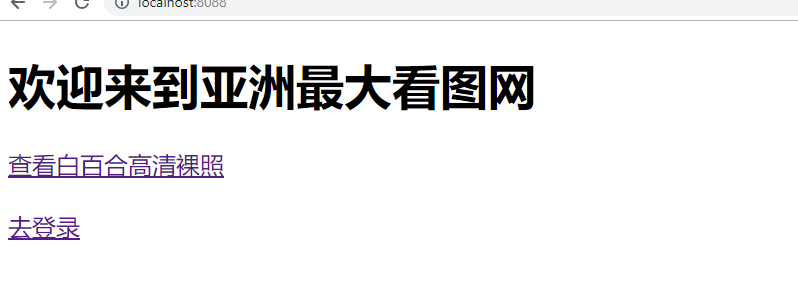
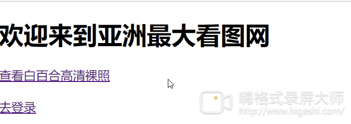
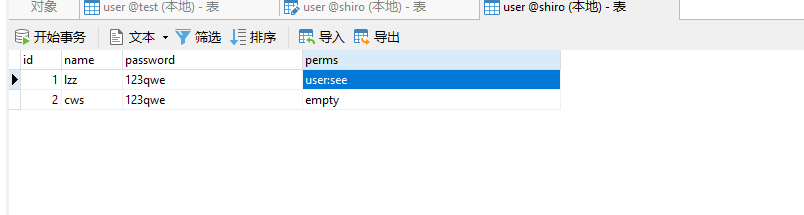
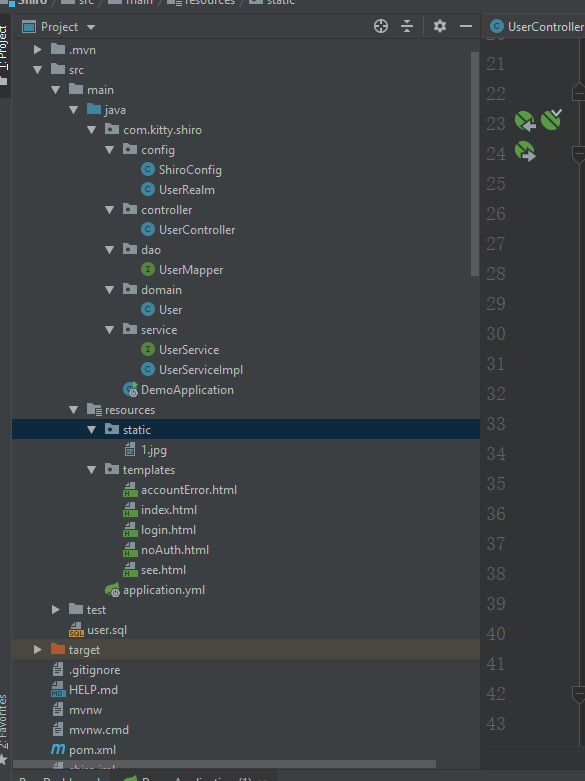

唠唠嗑：咕咕咕，和曹神接了一个战略性的项目，一个月完工，真尼玛刺激每天肝新的东西，但是每天确实收获了很多，把Springboot的边边角角熟练了一遍，也遇到了自己之前从未遇到的问题，比如需要使用Netty-socketio及时推送服务，Shiro认证授权服务，其实大一的时候非常害怕java的框架，确实比起django，flask厚重太多,不过呢，需求才是上帝，要养家糊口的鸭，硬着头皮学下去，感觉每个后端框架的瓶颈都在于权限认证这一块，这里记录一下Spring boot认证授权的demo吧，旨在以后项目配置的时候复制粘贴后端代码（因为只是后端小开发仔，所以UI😰就 逃！
所有代码地址：https://github.com/Kit4y/Springboot-Shiro-PictureWebsite

一、功能需求
1.1、需要的玩意
1、spring boot
2、Mybaties
3、mysql知识
4、thymeleaf
5、一张白百合高清裸照
1.2、功能
1、游客访问跳转到登录界面，用户信息存储在数据库中，账号密码不匹配提示。

数据库如图:
2、普通用户成功登录，但是未授权的用户提示未授权(cws为普通用户未授权，lzz为牛逼用户授权成功，授权字段自己定义,由于追求最简单化，所以没有将权限分表，实战项目RBAC需要对多多表对应关系)
3、授权的牛逼用户登录，能够查看白百合高清裸照（刺不刺激

二、代码分析，由于源码在github，所以只略述核心代码
2.1、项目文件结构

2.2、添加依赖包（pow.xml）
<dependency>
<groupId>org.apache.shiro</groupId>
<artifactId>shiro-spring</artifactId>
<version>1.3.2</version>
</dependency>
<dependency>
<groupId>mysql</groupId>
<artifactId>mysql-connector-java</artifactId>
<scope>runtime</scope>
</dependency>
<dependency>
<groupId>com.alibaba</groupId>
<artifactId>druid</artifactId>
<version>1.1.10</version>
</dependency>
<dependency>
<groupId>org.springframework.boot</groupId>
<artifactId>spring-boot-starter-thymeleaf</artifactId>
</dependency>其中shiro-spring是shiro的包，mysql-connector-java和druid是数据库的包，spring-boot-starter-thymeleaf是thymeleaf的包（如果前后端分离可以不需要这个包）
2.3、User类和数据库配置
这里讲shiro的，所以数据库问题，不展开,只展示一下UserMapper
UserMapper
@Mapper
public interface UserMapper {
@Select("select * from user where name = #{name}")
public User findByName(String name);
@Select("select * from user where id = #{id}")
public User findById(Integer id);
}2.4、Controller
由于这个demo非常简单，所以Controller也很简单,其他的只要返回对于的html就行，主要只是登录处理
@RequestMapping("/login")
public String login(String name,String password,boolean rememberMe, Model model) {
//1、获取subject
Subject subject = SecurityUtils.getSubject();
//2、封装用户数据
UsernamePasswordToken token = new UsernamePasswordToken(name,password,rememberMe);
//3、执行登录方法
try {
//交给Realm处理--->执行它的认证方法
subject.login(token);
//登录成功
return "index";
}catch (UnknownAccountException e){
//登录失败:用户名不存在
return "accountError";
}catch (IncorrectCredentialsException e){
//登录失败：密码错误
return "accountError";
}
}相对应是login.html中的表单
<form method="post" action="login">
用户名:<input type="text" name="name"><br>
密码:<input type="password" name="password"><br>
<input type="submit" value="登录">
</form>2.5、Shiro核心配置
ShiroConfig,主要是对于全局拦截规则的定义，比如哪些路由需要登录啦，哪些路由需要授权啦，大致的规则如下。
/**
* Shiro内置过滤器，可以实现权限相关的拦截器
* 常用的过滤器：
* anon: 无需认证（登录）可以访问
* authc: 必须认证才可以访问
* user: 如果使用rememberMe功能可以直接访问
* perms: 该资源必须得到资源权限才可以访问
* role: 该资源必须得到角色权限才可以访问
*/具体使用
@Bean
public ShiroFilterFactoryBean getShiroFilterFactoryBean(@Qualifier("securityManager")
DefaultWebSecurityManager securityManager){
ShiroFilterFactoryBean shiroFilterFactoryBean = new ShiroFilterFactoryBean();
// 设置安全管理器
shiroFilterFactoryBean.setSecurityManager(securityManager);
Map<String, String> filerMap = new LinkedHashMap<>(); //顺序的map
filerMap.put("/index","anon");
filerMap.put("/login","anon"); //login是表单提交的
filerMap.put("/toLogin","anon");
filerMap.put("/see","perms[user:see]"); //对应数据库的 permers
//设置登录的页面，发送toLogin请求
shiroFilterFactoryBean.setLoginUrl("/toLogin");
//设置未授权的页面
shiroFilterFactoryBean.setUnauthorizedUrl("/noAuth");
//设置过滤器
shiroFilterFactoryBean.setFilterChainDefinitionMap(filerMap);
return shiroFilterFactoryBean;
}其中setLoginUrl设置未认证如何跳转，setUnauthorizedUrl设置未授权如何跳转
UserRealm Realm叫做用户域，从mysql数据库获取用户权限，并显示设置给shiro，即连接逻辑和数据库的配置。
public class UserRealm extends AuthorizingRealm {
@Autowired
private UserService userService;
/**
* 执行授权逻辑
*/
@Override
protected AuthorizationInfo doGetAuthorizationInfo(PrincipalCollection principalCollection) {
System.out.println("执行授权逻辑");
//给资源进行授权
SimpleAuthorizationInfo info = new SimpleAuthorizationInfo();
//获取当前登录用户
Subject subject = SecurityUtils.getSubject();
User user = (User)subject.getPrincipal();
//System.out.println(subject.getPrincipal());
User dbUser = userService.findById(user.getId());
// info.addStringPermission("user:add");
info.addStringPermission(dbUser.getPerms());
return info;
}
/**
* 执行认证逻辑
*/
@Override
protected AuthenticationInfo doGetAuthenticationInfo(AuthenticationToken authenticationToken) throws AuthenticationException {
System.out.println("执行认证逻辑");
//编写shiro判断逻辑，判断用户名和密码
UsernamePasswordToken token = (UsernamePasswordToken)authenticationToken;
User user = userService.findByName(token.getUsername());
//1、判断用户名
if(user == null){
//用户名不存在
return null; //shiro底层会抛出UnKnowAccountException
}
//2、判断密码, 这里的user是principal
return new SimpleAuthenticationInfo(user,user.getPassword(),getName());
}
然后你只要在ShiroConfig中实例化Realm、SecurityManager即完成
@Bean(name = "securityManager")
public DefaultWebSecurityManager getDefaultWebSecurityManager(@Qualifier("userRealm") UserRealm userRealm){
DefaultWebSecurityManager securityManager = new DefaultWebSecurityManager();
// 关联realm
securityManager.setRealm(userRealm);
return securityManager;
}
/**
* 创建Realm
*/
@Bean(name = "userRealm")
public UserRealm getRealm(){
return new UserRealm();
}